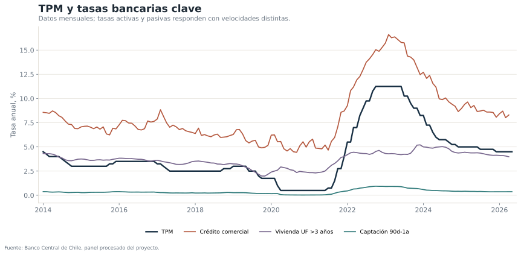
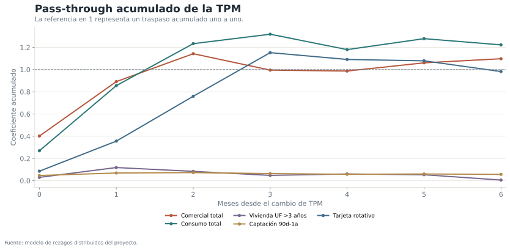
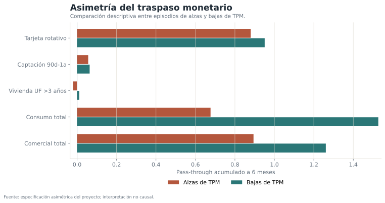
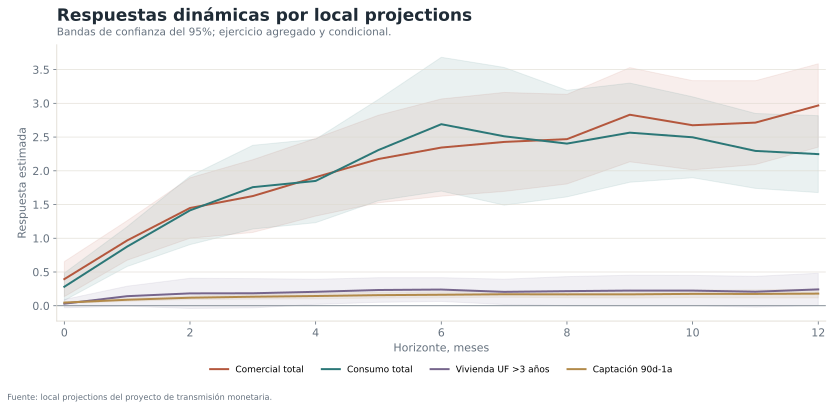

Pregunta de investigación
¿Qué tan rápido y con qué intensidad se transmiten los cambios de la Tasa de Política Monetaria hacia tasas de captación y colocación en Chile? ¿Existen diferencias entre productos y entre episodios de alzas y bajas?
El proyecto combina tres ejercicios complementarios:
- Modelos de rezagos distribuidos para el pass-through acumulado.
- Especificaciones asimétricas para alzas y bajas de TPM.
- Local projections para describir la trayectoria horizonte por horizonte.
Canales principales

Pass-through acumulado

A seis meses, el coeficiente acumulado es cercano a 1,10 para crédito comercial total y 1,22 para consumo total. En vivienda UF, el coeficiente es prácticamente nulo en esta especificación mensual, consistente con una dinámica más lenta y con la influencia de tasas largas reales.
| Producto | 1 mes | 3 meses | 6 meses |
|---|---|---|---|
| Comercial: sobregiro | 0,794 | 1,054 | 1,318 |
| Consumo total | 0,856 | 1,319 | 1,223 |
| Comercial total | 0,892 | 0,995 | 1,098 |
| Tarjeta: rotativo | 0,356 | 1,153 | 0,982 |
| Comercial: cuotas | 0,754 | 0,993 | 0,948 |
| Consumo: cuotas | 1,170 | 0,549 | 0,570 |
| Tarjeta: cuota | 0,008 | 1,025 | 0,562 |
| Captación 30-89d | 0,078 | 0,080 | 0,080 |
| Captación 90d-1a | 0,069 | 0,064 | 0,057 |
| Vivienda UF >3 años | 0,118 | 0,048 | 0,005 |
Asimetría entre alzas y bajas

La asimetría puede reflejar competencia, costos de ajuste, composición de cartera, riesgo o diferencias entre ciclos monetarios. No debe atribuirse mecánicamente a una conducta particular de la banca sin un diseño adicional.
Local projections

Las local projections permiten verificar si la forma dinámica obtenida con rezagos distribuidos se mantiene sin imponer la misma estructura paramétrica en todos los horizontes.
Robustez y cautelas
- Se comparan muestra completa, período posterior a 2010 y muestra excluyendo 2020–2023.
- Las tasas promedio pueden cambiar por composición de operaciones, no solo por precio puro.
- La TPM y las tasas responden simultáneamente al ciclo macroeconómico; los controles reducen, pero no eliminan, endogeneidad.
- El canal hipotecario requiere incorporar con mayor detalle tasas largas reales, spreads y condiciones de oferta.
- Los coeficientes mayores que uno no implican automáticamente sobre-reacción causal: pueden capturar movimientos conjuntos de riesgo y ciclo.